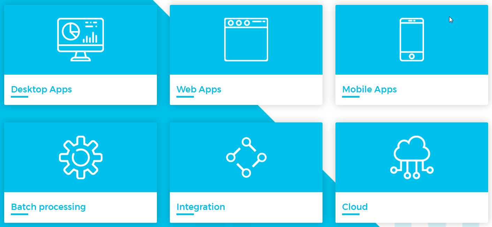

Projekt i implementacja systemów webowych
Platforma OASP
Open Application Standard Platform
The OASP is a solution to building business applications which combine best-in-class frameworks and libraries as well as industry proven practices and code conventions.
OASP oferuje elastyczne rozwiązanie dla szerokiej klasy problemów.

Technologie

OASP4J
- Gotowe rozwiązanie dla implementacji backendowych.
- Java, SpringBoot
- Dokument opisujący zbiór reguł i wzorców: https://github.com/oasp/oasp4j/wiki
- Zalążek aplikacji do własnego wykorzystania: https://github.com/oasp/oasp4js-ng-boot-project-seed.git
OASP4JS
- Gotowe rozwiązanie dla klientów zbudowanych w oparciu o Angular 4 i TypeScript.
- Zalążek aplikacji do własnego wykorzystania: https://github.com/oasp/oasp4js-ng-project-seed.git.
- Zalążek dla OASP4J zawiera zintegrowaną część backendową i frontendową:
- środowisko testowe w oparciu o Karma/Jasmine
- środowisko uruchomieniowe z śledzeniem zmian